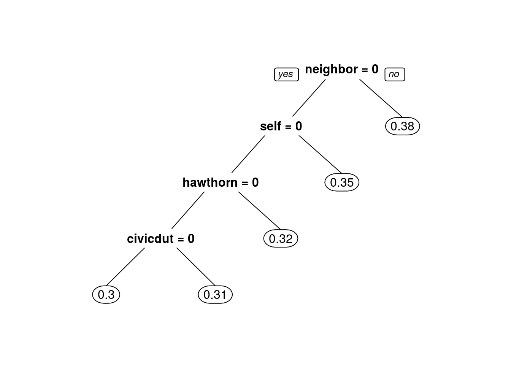
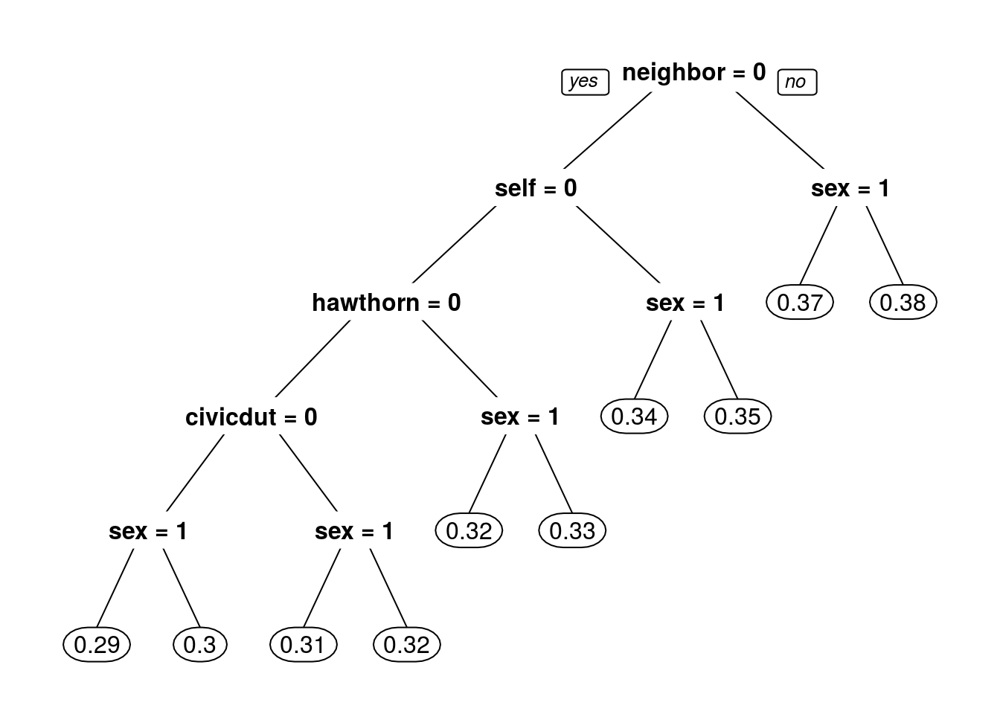
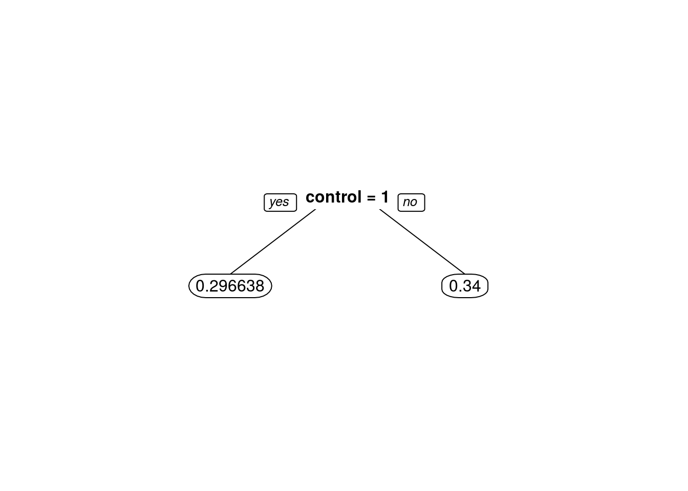
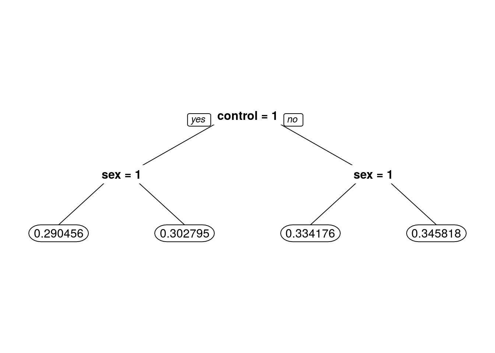

In August 2006 three researchers (Alan Gerber and Donald Green of Yale University, and Christopher Larimer of the University of Northern Iowa) carried out a large scale field experiment in Michigan, USA to test the hypothesis that one of the reasons people vote is social, or extrinsic, pressure.
To quote the first paragraph of their 2008 research paper:
- “Among the most striking features of a democratic political system is the participation of millions of voters in elections. Why do large numbers of people vote, despite the fact that …”the casting of a single vote is of no significance where there is a multitude of electors“? One hypothesis is adherence to social norms. Voting is widely regarded as a citizen duty, and citizens worry that others will think less of them if they fail to participate in elections. Voters’ sense of civic duty has long been a leading explanation of voters turnout…”
In this analysis, I’ll use both logistic regression and classification trees to analyze the data they collected.
The data
The researchers grouped about 344,000 voters into different groups randomly - about 191,000 voters were a “control” group, and the rest were categorized into one of four “treatment” groups. These five groups correspond to five binary variables in the dataset.
- “Civic Duty” (variable civicduty) group members were sent a letter that simply said “DO YOUR CIVIC DUTY - VOTE!”
- “Hawthorne Effect” (variable hawthorne) group members were sent a letter that had the “Civic Duty” message plus the additional message “YOU ARE BEING STUDIED” and they were informed that their voting behavior would be examined by means of public records.
- “Self” (variable self) group members received the “Civic Duty” message as well as the recent voting record of everyone in that household and a message stating that another message would be sent after the election with updated records.
- “Neighbors” (variable neighbors) group members were given the same message as that for the “Self” group, except the message not only had the household voting records but, also that of neighbors - maximizing social pressure.
- “Control” (variable control) group members were not sent anything, and represented the typical voting situation.
Additional variables include sex (0 for male, 1 for female), yob (year of birth), and the dependent variable voting (1 if they voted, 0 otherwise).
Problem 1.1 - Exploration and Logistic Regression
We will first get familiar with the data.
What proportion of people in this dataset voted in this election?
gerber <- read.csv("gerber.csv")
str(gerber)'data.frame': 344084 obs. of 8 variables:
$ sex : int 0 1 1 1 0 1 0 0 1 0 ...
$ yob : int 1941 1947 1982 1950 1951 1959 1956 1981 1968 1967 ...
$ voting : int 0 0 1 1 1 1 1 0 0 0 ...
$ hawthorne: int 0 0 1 1 1 0 0 0 0 0 ...
$ civicduty: int 1 1 0 0 0 0 0 0 0 0 ...
$ neighbors: int 0 0 0 0 0 0 0 0 0 0 ...
$ self : int 0 0 0 0 0 0 0 0 0 0 ...
$ control : int 0 0 0 0 0 1 1 1 1 1 ...table(gerber$voting)
0 1
235388 108696 108696 / (235388 + 108696)[1] 0.3158996Problem 1.2 - Exploration and Logistic Regression
Which of the four “treatment groups” had the largest percentage of people who actually voted (voting = 1)?
# howthorne
table(gerber$voting, gerber$hawthorne)
0 1
0 209500 25888
1 96380 1231612316 / (25888 + 12316)[1] 0.3223746# civicduty
table(gerber$voting, gerber$civicduty)
0 1
0 209191 26197
1 96675 1202112021 / (26197 + 12021)[1] 0.3145377# neighbors
table(gerber$voting, gerber$neighbors)
0 1
0 211625 23763
1 94258 1443814438 / (23763 + 14438)[1] 0.3779482# self
table(gerber$voting, gerber$self)
0 1
0 210361 25027
1 95505 1319113191 / (25027 + 13191)[1] 0.3451515Neighbors
Problem 1.3 - Exploration and Logistic Regression
Build a logistic regression model for voting using the four treatment group variables as the independent variables (civicduty, hawthorne, self, and neighbors). Using all the data to build the model (NOT spliting the data into a training set and testing set).
Which of the following coefficients are significant in the logistic regression model?
VotingLog <- glm(voting ~ civicduty + hawthorne + self + neighbors,
data = gerber, family = binomial)
summary(VotingLog)
Call:
glm(formula = voting ~ civicduty + hawthorne + self + neighbors,
family = binomial, data = gerber)
Deviance Residuals:
Min 1Q Median 3Q Max
-0.9744 -0.8691 -0.8389 1.4586 1.5590
Coefficients:
Estimate Std. Error z value Pr(>|z|)
(Intercept) -0.863358 0.005006 -172.459 < 2e-16 ***
civicduty 0.084368 0.012100 6.972 3.12e-12 ***
hawthorne 0.120477 0.012037 10.009 < 2e-16 ***
self 0.222937 0.011867 18.786 < 2e-16 ***
neighbors 0.365092 0.011679 31.260 < 2e-16 ***
---
Signif. codes: 0 '***' 0.001 '**' 0.01 '*' 0.05 '.' 0.1 ' ' 1
(Dispersion parameter for binomial family taken to be 1)
Null deviance: 429238 on 344083 degrees of freedom
Residual deviance: 428090 on 344079 degrees of freedom
AIC: 428100
Number of Fisher Scoring iterations: 4All coefficients are significant
Problem 1.4 - Exploration and Logistic Regression
Using a threshold of 0.3, what is the accuracy of the logistic regression model? (When making predictions, you don’t need to use the new data argument since we didn’t split our data.)
predictVoting <- predict(VotingLog, type = "response")
table(gerber$voting, predictVoting > 0.3)
FALSE TRUE
0 134513 100875
1 56730 51966(134513 + 51966) / nrow(gerber)[1] 0.5419578Problem 1.5 - Exploration and Logistic Regression
Using a threshold of 0.5, what is the accuracy of the logistic regression model?
table(gerber$voting, predictVoting > 0.5)
FALSE
0 235388
1 108696(235388) / nrow(gerber)[1] 0.6841004table(gerber$voting)
0 1
235388 108696 235388 / (235388 + 108696)[1] 0.68410040.6841004 => equal to accuracy of threshold of 0.5
Problem 1.6 - Exploration and Logistic Regression
Compare our previous two answers to the percentage of people who did not vote (the baseline accuracy) and computing the AUC of the model. What is happening here?
library(ROCR)Loading required package: gplots
Attaching package: 'gplots'The following object is masked from 'package:stats':
lowessROCRpred = prediction(predictVoting, gerber$voting)
as.numeric(performance(ROCRpred, "auc")@y.values)[1] 0.5308461Even though all of the variables are significant, this is a weak predictive model.
Problem 2.1 - Trees
I’ll now try out trees! Building a CART tree for voting using all data and the same four treatment variables we used before. Don’t set the option method=“class” - we are actually going to create a regression tree here.
We are interested in building a tree to explore the fraction of people who vote, or the probability of voting.
I’d like CART to split our groups if they have different probabilities of voting. If we used method=‘class’, CART would only split if one of the groups had a probability of voting above 50% and the other had a probability of voting less than 50% (since the predicted outcomes would be different).
However, with regression trees, CART will split even if both groups have probability less than 50%. Leave all the parameters at their default values.
library(rpart)
library(rpart.plot)
CARTmodel <-
rpart(voting ~ civicduty + hawthorne + self + neighbors, data = gerber)
# plot the tree. What happens, and if relevant, why?
prp(CARTmodel)No variables are used (the tree is only a root node) - none of the variables make a big enough effect to be split on.
Problem 2.2 - Trees
Now build the tree:
CARTmodel2 <-
rpart(voting ~ civicduty + hawthorne + self + neighbors,
data=gerber, cp=0.0)
prp(CARTmodel2)
What do we observe about the order of the splits? #### Neighbor is the first split, civic duty is the last.
Problem 2.3 - Trees
Using only the CART tree plot, we note that the fraction (a number between 0 and 1) of “Civic Duty” people voted amounted to: #### 31%
Problem 2.4 - Trees
Building a new tree that includes the “sex” variable, again with cp = 0.0. Notice that sex appears as a split that is of secondary importance to the treatment group.
CARTmodel3 <-
rpart(voting ~ civicduty + hawthorne + self + neighbors + sex,
data=gerber, cp=0.0)
prp(CARTmodel3)
In the control group, which gender is more likely to vote? #### Men (0)
In the “Civic Duty” group, which gender is more likely to vote? #### Men (0)
Problem 3.1 - Interaction Terms
We know trees can handle “nonlinear” relationships, e.g. “in the ‘Civic Duty’ group and female”, but as we will see in the next few questions, it is possible to do the same for logistic regression.
Firstly, let’s explore what trees can tell us. Let’s just focus on the “Control” treatment group. Creating a regression tree using just the “control” variable, then creating another tree with the “control” and “sex” variables, both with cp=0.0.
CARTcontrol <- rpart(voting ~ control, data = gerber, cp = 0.0)
CARTcontrolAndSex <- rpart(voting ~ control + sex, data = gerber, cp = 0.0)In the “control” only tree, what is the absolute value of the difference in the predicted probability of voting between being in the control group versus being in a different group?
Using the absolute value function to get an answer, i.e. abs(Control Prediction - Non-Control Prediction). I’ll add the argument “digits = 6” to the prp code to get a more accurate estimate.
prp(CARTcontrol, digits = 6)
abs(0.296638 - 0.34)[1] 0.0433620.043362
Problem 3.2 - Interaction Terms
Now, using the second tree (with control and sex), determine who is affected more by NOT being in the control group (being in any of the four treatment groups):
prp(CARTcontrolAndSex, digits = 6)
They are affected about the same (change in probability within 0.001 of each other).
Problem 3.3 - Interaction Terms
Going back to logistic regression now, I’ll build a model using “sex” and “control”. Interpreting the coefficient for “sex”:
VotingControlAndSexLog <-
glm(voting ~ control + sex, data = gerber, family = binomial)
summary(VotingControlAndSexLog)
Call:
glm(formula = voting ~ control + sex, family = binomial, data = gerber)
Deviance Residuals:
Min 1Q Median 3Q Max
-0.9220 -0.9012 -0.8290 1.4564 1.5717
Coefficients:
Estimate Std. Error z value Pr(>|z|)
(Intercept) -0.635538 0.006511 -97.616 < 2e-16 ***
control -0.200142 0.007364 -27.179 < 2e-16 ***
sex -0.055791 0.007343 -7.597 3.02e-14 ***
---
Signif. codes: 0 '***' 0.001 '**' 0.01 '*' 0.05 '.' 0.1 ' ' 1
(Dispersion parameter for binomial family taken to be 1)
Null deviance: 429238 on 344083 degrees of freedom
Residual deviance: 428443 on 344081 degrees of freedom
AIC: 428449
Number of Fisher Scoring iterations: 4Coefficient is negative, reflecting that women are less likely to vote!
Problem 3.4 - Interaction Terms
The regression tree calculated the percentage voting exactly for every one of the four possibilities (Man, Not Control), (Man, Control), (Woman, Not Control), (Woman, Control).
Logistic regression has attempted to do the same, although it wasn’t able to do as well because it can’t consider exactly the joint possibility of being a women and in the control group.
I can quantify this precisely. By creating the following dataframe (this contains all of the possible values of sex and control), and evaluating our logistic regression using the predict function (where “LogModelSex” is the name of our logistic regression model that uses both control and sex):
Possibilities <- data.frame(sex=c(0,0,1,1), control=c(0,1,0,1))
predict(VotingControlAndSexLog, newdata=Possibilities, type="response") 1 2 3 4
0.3462559 0.3024455 0.3337375 0.2908065 The four values in the results correspond to the four possibilities in the order they are stated above ( (Man, Not Control), (Man, Control), (Woman, Not Control), (Woman, Control) ).
What is the absolute difference between the tree and the logistic regression for the (Woman, Control) case?
The answer contains five numbers after the decimal point.
abs(0.290456 - 0.2908065)[1] 0.0003505round(0.0003505, digits = 5)[1] 0.00035Problem 3.5 - Interaction Terms
So the difference is not too big for this dataset, but it’s there. I’m going to add a new term to our logistic regression now, that is the combination of the “sex” and “control” variables - so if this new variable is 1, that means the person is a woman AND in the control group.
LogModel2 <- glm(voting ~ sex + control + sex:control,
data = gerber, family = "binomial")How do I interpret the coefficient for the new variable in isolation? That is, how does it relate to the dependent variable?
summary(LogModel2)
Call:
glm(formula = voting ~ sex + control + sex:control, family = "binomial",
data = gerber)
Deviance Residuals:
Min 1Q Median 3Q Max
-0.9213 -0.9019 -0.8284 1.4573 1.5724
Coefficients:
Estimate Std. Error z value Pr(>|z|)
(Intercept) -0.637471 0.007603 -83.843 < 2e-16 ***
sex -0.051888 0.010801 -4.804 1.55e-06 ***
control -0.196553 0.010356 -18.980 < 2e-16 ***
sex:control -0.007259 0.014729 -0.493 0.622
---
Signif. codes: 0 '***' 0.001 '**' 0.01 '*' 0.05 '.' 0.1 ' ' 1
(Dispersion parameter for binomial family taken to be 1)
Null deviance: 429238 on 344083 degrees of freedom
Residual deviance: 428442 on 344080 degrees of freedom
AIC: 428450
Number of Fisher Scoring iterations: 4If a person is a woman and in the control group, the chance that she voted goes down.
Problem 3.6 - Interaction Terms
Run the same code as before to calculate the average for each group:
predict(LogModel2, newdata=Possibilities, type="response") 1 2 3 4
0.3458183 0.3027947 0.3341757 0.2904558 Now, what is the difference between the logistic regression model and the CART model for the (Woman, Control) case?
Again, our answer has five numbers after the decimal point.
abs(0.290456 - 0.2904558)[1] 2e-07round(2e-07, digits = 5)[1] 0Conclusion - Interaction Terms
This example has shown that trees can capture nonlinear relationships that logistic regression cannot, but that we can get around this sometimes by using variables that are the combination of two variables.
Should we always include all possible interaction terms of the independent variables when building a logistic regression model? #### No (because of overfitting)